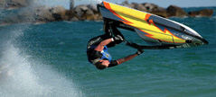

EXTREME SPORTS

Watch out for amazing top class action on the River Boyne as our Extreme Sports crew come to town again.
Prepare to be blown away by our Wakeboarders and Flyboarders.
This team of world-class athletes will wow you with inverts, tricks and jumps. Keep an eye out for special appearances by our Flyboarder as his jet powered board rises out of the water and sending him soaring into the air.
On the Boyne - Displays : Wakeboard & Flyboard
Times
Saturday: 11:30-13:00, 15:45-16:30, 17:45-18:30
Sunday: 11:30-12:00, 12:30-14:00, 17:15-17:45